Selecting Fragments
Once you have imported your target molecule into OFraMP, you can start building it with fragments from pre-paramtrised molecules from the ATB database. An example target molecule is displayed in the image below.
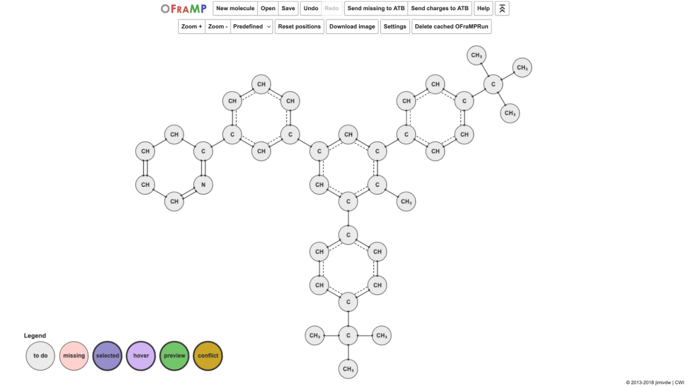{kind=link}
To begin selecting fragments click on an atom group.
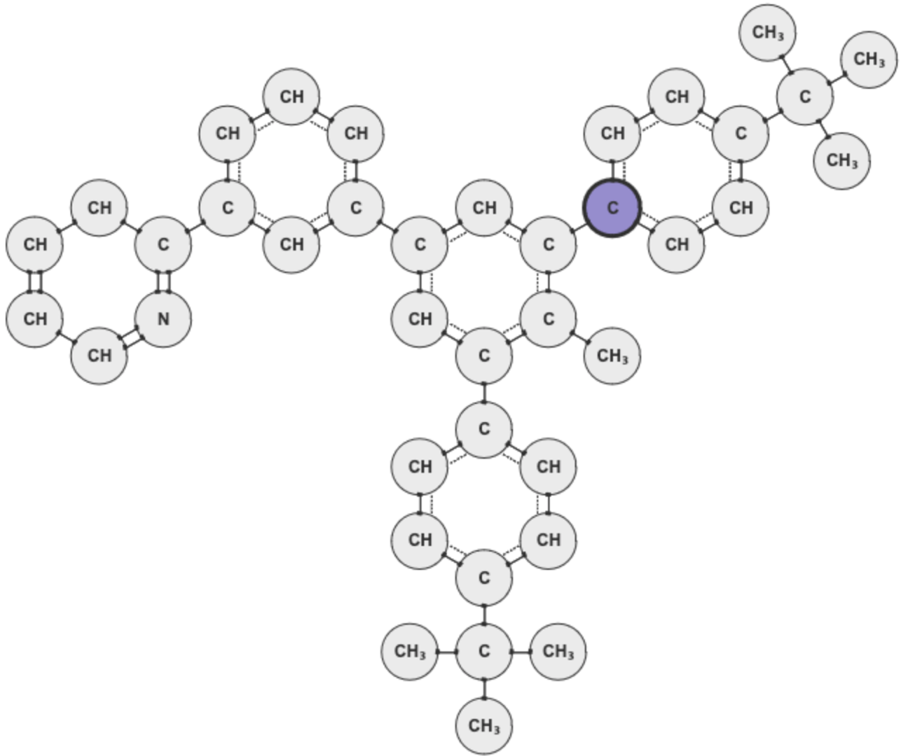{kind=link}
Its information will appear on a window to the left of the target molecule. This information includes the number of atoms in the atom group, the number of atoms in the group that have been parametrised, and any charges that may have been assigned to those atoms. If no charges have yet been assigned, the sections that show this information will be blank.
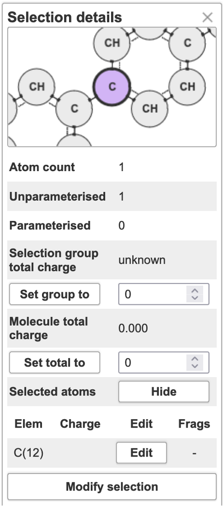{kind=link}
A list of potential fragments that include the selected atom group will appear on a window to the right of the target molecule. The fragments are in descending order of the likelihood of it being the best match.
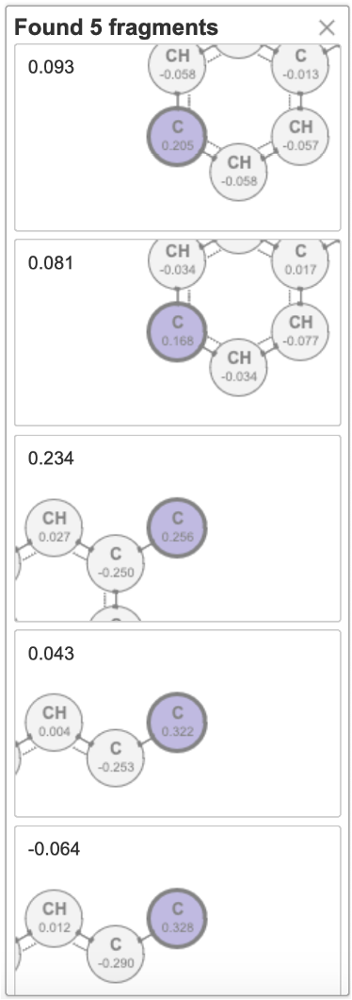{kind=link}
Click on one of the fragments in the list to view its prompts.
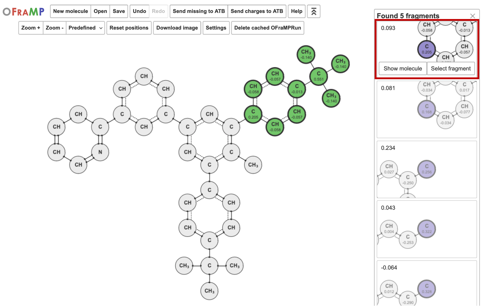{kind=link}
You can view the pre-parametrised molecule the fragment is being pulled from by clicking ‘Show molecule’.
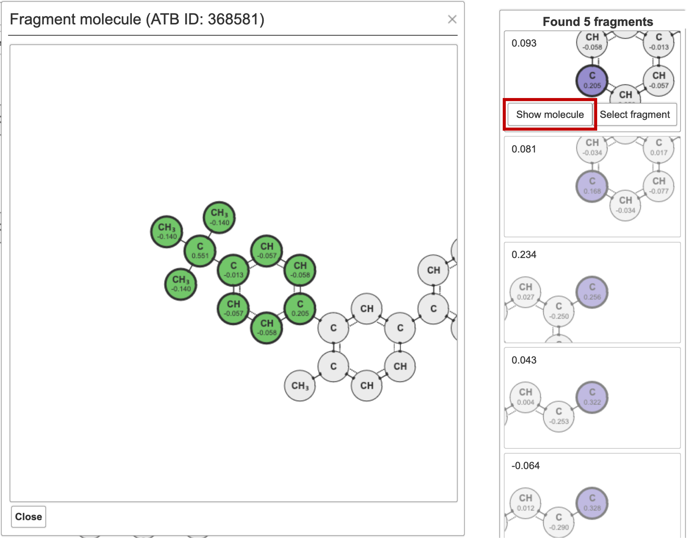{kind=link}
Click ‘Select fragment’ to use it for the parametrisation of your target molecule.
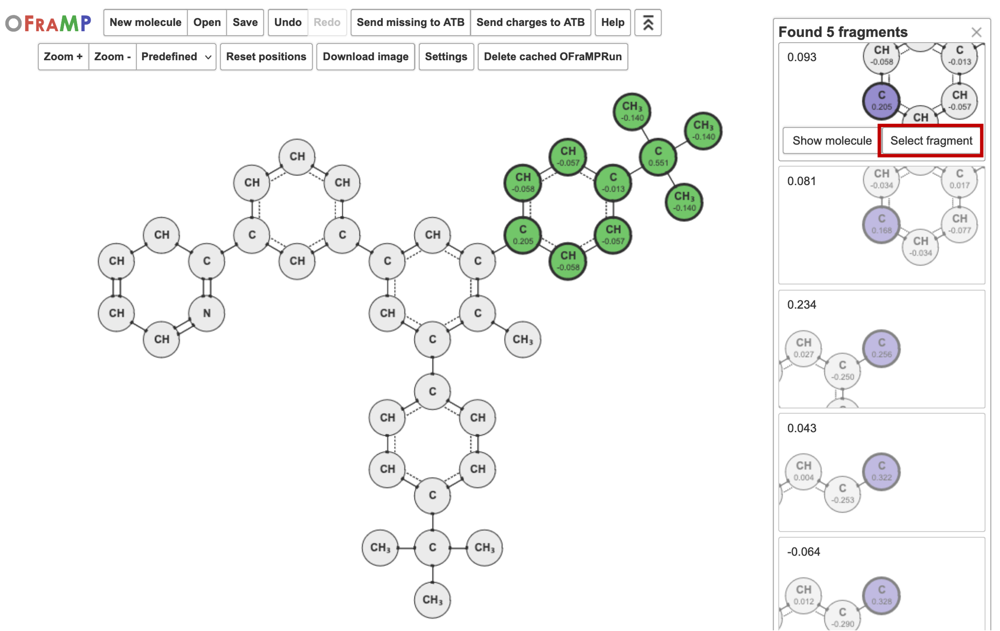{kind=link}
Once you have selecteded a fragment, the atom groups in the target molecule will be coloured a light green.
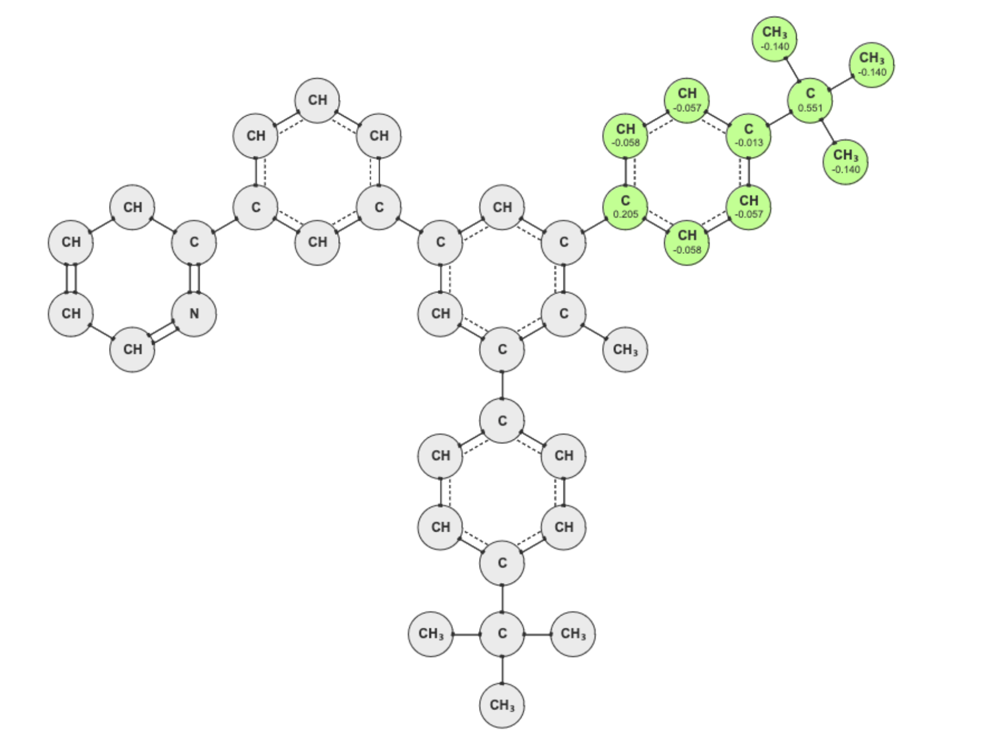{kind=link}
Continue to select fragments until the target molecule has been fully parametrised. Some atom groups in your target molecule may be coloured red. These are missing charges
Charge Clashes
The atom groups of selected atoms may overlap. The charge of the overlapping atom group may differ in each fragment. Atom groups with clashing charges will be coloured yellow in the target molecule.
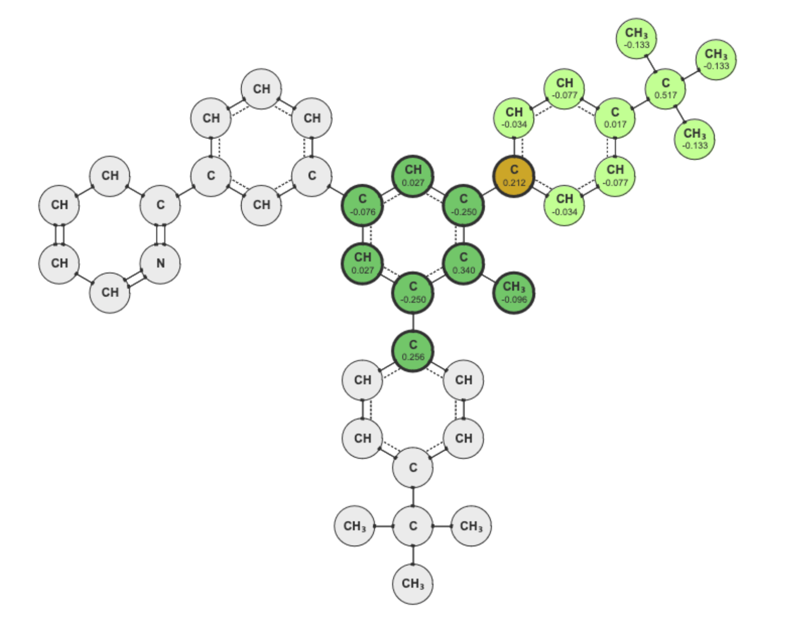{kind=link}
If an fragment with a conflicting charge is selected, the window below will load. It will ask you to resolve the clash.
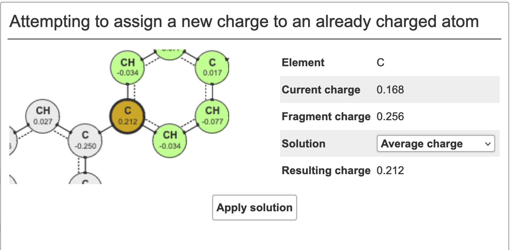{kind=link}
You can resolve the clash by averaging the charges, by using the charge from the newly selected fragment, the current charge, or a custom charge.
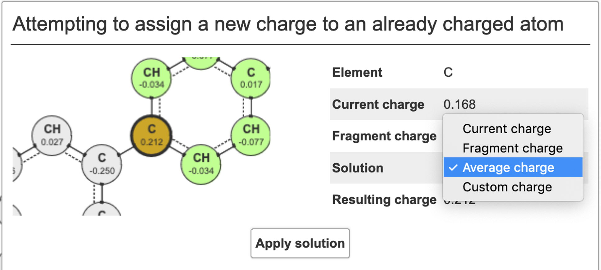{kind=link}
Click ‘Apply solution’.
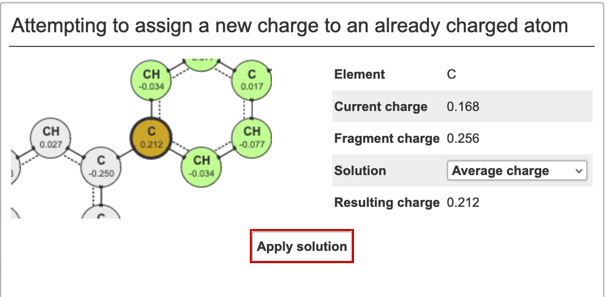{kind=link}
Once your target molecule is fully parametrised, you can send its charges to the ATB